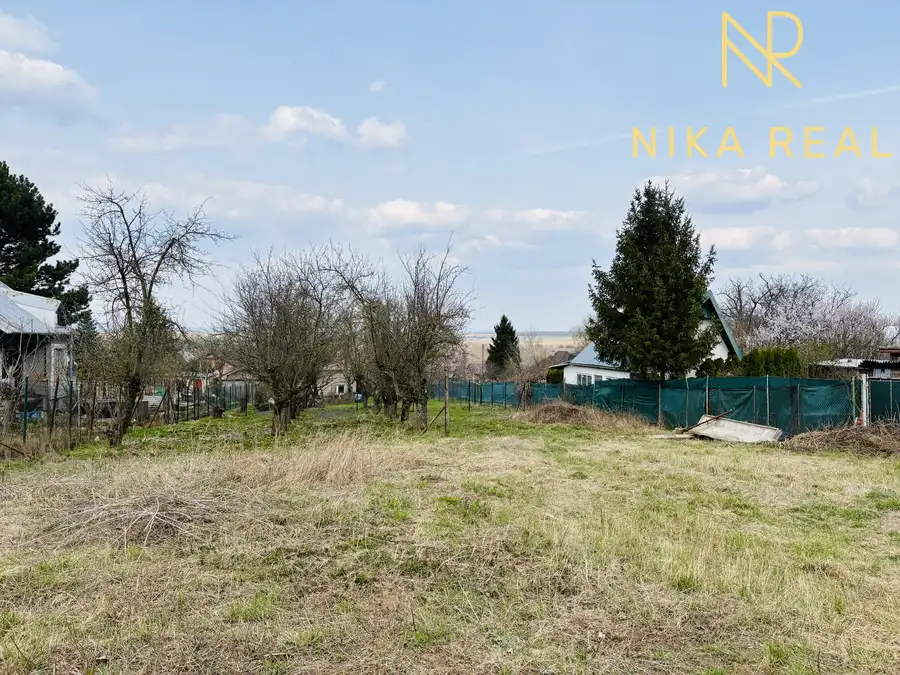
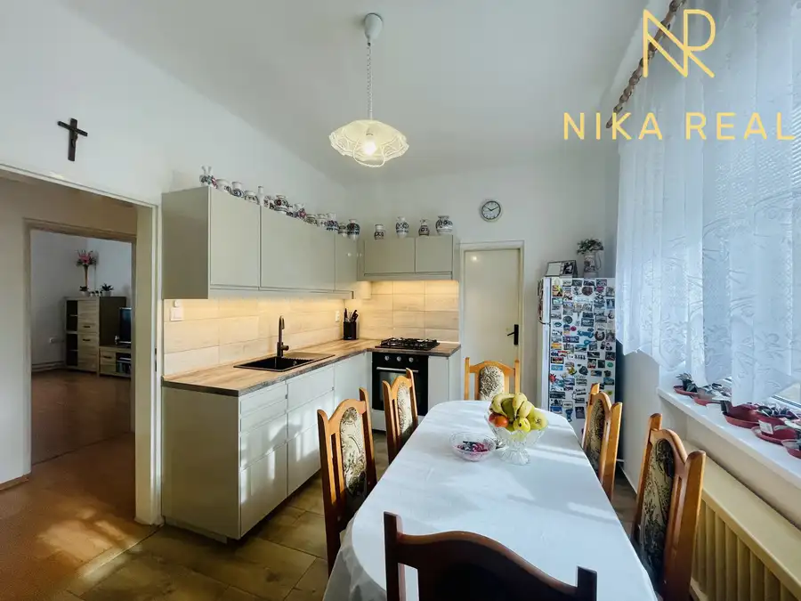
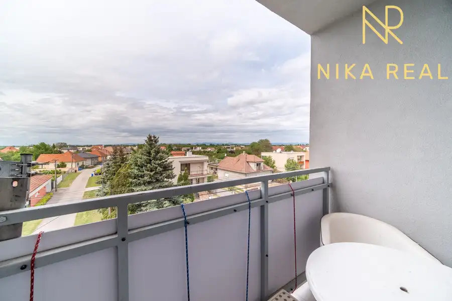

Moderný, kompletne zariadený rodinný dom - Trnava Spiegelsaal
Trnava
- Plocha110 m²
- StavNovostavba
- VlastníctvoOsobné
- Energetická triedaB
O nehnuteľnosti
Exkluzívne iba u nás na predaj 4-izbový rodinný dom v jednej z najvyhľadávanejších a najpokojnejších lokalít mesta Trnava – Spiegelsal, na Tomášikovej ulici.Ide o poctivú, kvalitnú stavbu, ktorá spája vysoký štandard bývania, moderné technológie a veľmi priaznivé mesačné náklady.Dom je postavený na pozemku o výmere 300 m², má zastavanú plochu 146 m² a podlahovú plochu 110 m². Má 10 rokov, je kompletne zariadený a pripravený na okamžité nasťahovanie.Konštrukcia a technický stavRodinný dom je murovaný z tvárnic Ytong 38, má betónové stropy (Miako trámy zaliate betónom) a zateplenie EPS hrúbky 150 mm. Strecha je zateplená a pokrytá betónovou škridlou, pričom nad celou plochou domu sa nachádza pochôdzne podkrovie, ktoré slúži ako veľkorysý úložný priestor. Okná sú plastové s trojsklom, v obývačke sa nachádza hliníkový HS portál, ktorý zabezpečuje dostatok svetla a komfortný výstup na terasu. Interiér dopĺňajú znížené sadrokartónové stropy so zabudovaným doplnkovým osvetlením, rekuperáciou aj klimatizáciou. Technológie a komfort bývaniaV celom dome je vodné podlahové kúrenie, zdrojom tepla je plynový kotol Viessmann. Komfort bývania zvyšuje centrálna rekuperácia, klimatizácia, krb v obývačke, elektrické exteriérové hliníkové žalúzie (Z-profil) a zmäkčovač vody.Dom je napojený na všetky inžinierske siete – plyn, elektrinu, vodovod, kanalizáciu a optický internet. K dispozícii je aj vonkajšia elektrická prípojka 380 V. Bezpečnosť zabezpečuje kamerový systém, alarm a elektrická brána na diaľkové ovládanie.Mesačné náklady na energie sú približne 180 € komplet.Dispozícia a funkčnosť domuDom je navrhnutý veľmi prakticky a premyslene, s dôrazom na každodenný komfort a efektívne využitie priestoru. Každý prvok má svoje miesto, vďaka čomu dom pôsobí vzdušne, prehľadne a funkčne aj pri plnej prevádzke rodiny.Dispozícia pozostáva zo závetria, vstupnej chodby, technickej miestnosti s WC a umývadlom, kde je prakticky umiestnená práčka a sušička, čím zostáva obytná časť domu nerušená. Ďalej nasleduje centrálna chodba, obývacia izba prepojená s kuchyňou a jedálňou s priamym výstupom na terasu, pracovňa, detská izba, spálňa a veľkorysá kúpeľňa.Kuchyňa a vybavenieKuchyňa je vybavená kuchynskou linkou so zabudovanými spotrebičmi značky Siemens – indukčná varná doska, digestor s vývodom na povalu, elektrická rúra na pečenie, parná rúra, mikrovlnná rúra, umývačka riadu, drvič odpadu, kávovar a americká chladnička s mrazničkou.Dom sa predáva kompletne zariadený, vrátane nábytku a všetkých spotrebičov.ExteriérNa pozemku sa nachádza zastrešené parkovanie pre dve autá za sebou, záhradný domček s priestorom na drevo (sendvičová montovaná stavba), terasa so sedením a vírivka pre 6 osôb. Záhrada je riešená bezúdržbovo – geotextília a celoročne zelený umelý trávnik.LokalitaNehnuteľnosť sa nachádza v tichej rezidenčnej štvrti s minimálnou premávkou, ktorá je ideálna pre rodiny s deťmi aj náročnejších klientov. Centrum Trnavy je dostupné približne do 5 minút pešo, rovnako ako kompletná občianska vybavenosť – školy, škôlky, obchody, OC Max, služby, zdravotná starostlivosť či športoviská.Spiegelsal je dlhodobo považovaná za stabilnú a hodnotnú lokalitu, kde si nehnuteľnosti držia cenu a majú vysoký investičný potenciál.Cena a službyCena nehnuteľnosti zahŕňa kompletný právny a realitný servis, vypracovanie zmlúv, kataster, odovzdanie nehnuteľnosti aj prepis energií. Radi pomôžeme aj s financovaním prostredníctvom hypotekárneho úveru.Táto nehnuteľnosť je ideálnou voľbou pre tých, ktorí hľadajú prémiové bývanie v top lokalite Trnavy bez nutnosti ďalších investícií.Dom je pripravený na okamžité nasťahovanie. Dohodnite si obhliadku – k dispozícii 7 dní v týždni.Raz vidieť je viac ako 100-krát počuť.Veronika Dedáčková+421 911 290 837dedackova@nikareal.sk
Parametre
| Druh | Rodinný dom |
|---|---|
| Dátum zverejnenia | 10. 9. 2026 |
| Energetická náročnosť | Nízkoenergetický |
| Energetický certifikát budovy | B |
| Energie | 180 |
| Plocha pozemku | 300 m² |
| Plocha terasy v m2 | 12 m² |
| Počet izieb / miestností | 4 |
| Stav nehnuteľnosti | Novostavba |
| Telekomunikácie | Optická sieť |
| Terás | 1 |
| Terén pozemku | Rovinatý |
| Typ | Predaj |
| Typ konštrukcie | Iná |
| Vlastníctvo | Osobné |
| Vybavenie | Terasa, Sklad |
| Vykurovanie | Podlahové, Krb, Klimatizacia |
| Zariadenie | Zariadené kompletne |
| Zastavaná plocha | 146 m² |
| Úžitková plocha | 110 m² |
Kde to je


Mohlo by Vás zaujímať

PozemokNové7 39 000 €Záhrada a relax v blízkosti priehrady a Malých Karpát Suchá nad Parnou 657 m² Exkluzívne iba u nás na predaj – rekreačný pozemok v obci Suchá nad Parnou.Ponúkame Vám rekreačný pozemok o výmere 562 m² v atraktívnej rekreačnej…
DomNové10 280 000 €Veľký, čiastočne zrekonštruovaný rodinný dom v centre obce, len 10 min. od Trnavy Cífer 310.5 m² Exkluzívne iba u nás na predaj veľký rodinný dom vhodný aj na dvojgeneračné bývanie alebo spojenie bývania a podnikania. Ponúka rôzne možnosti úpravy…
BytNové10 141 600 €Veľký 3izbový byt s loggiou a pivnicou len 10 min. od Trnavy Majcichov 3-izbový82.36 m²3. podlažie Hľadáte pokojné bývanie mimo mestského ruchu, no stále v blízkosti Trnavy? Exkluzívne iba u nás nájdete veľkorysý 3-izbový byt v obci Majcichov. Byt…